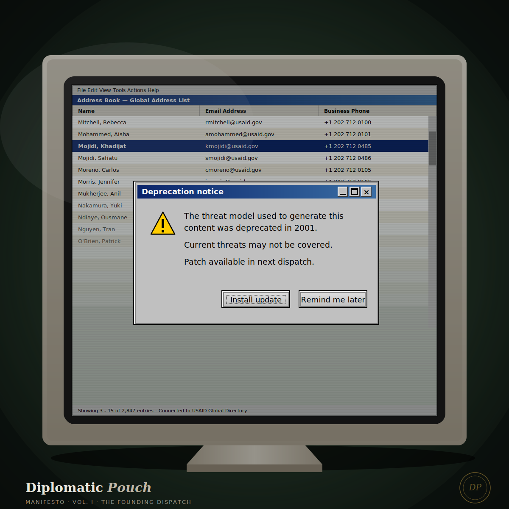

Two Mojidis in the Global Address List
A first dispatch from Diplomatic Pouch.

In the summer of 2008, my first job out of college was writing the daily agency notices for the United States Agency for International Development. Every morning before coffee, my dispatch hit the inboxes of every Foreign Service Officer assigned to USAID — from Dakar to Dhaka, Port-au-Prince to Bangkok. I was twenty-two years old.
For the first several months, I would regularly receive replies addressed to my mother.
Senior officers in posts around the world would glance at the sender field in the Global Address List, register the surname Mojidi, and reply with the familiarity of decades of professional friendship. Khadijat, hope the new posting is treating you well. Khadijat, quick question on the briefing language. They were not expecting two Mojidis in the GAL. They were not expecting the Mojidi writing the daily notice to be a twenty-two-year-old kid with a Nigerian passport, who had played NCAA Division I basketball at the University of Rhode Island and who, two summers earlier, had worn Nigeria's green and white at the 2007 FIBA Africa Championship for Women in Senegal — the qualifying tournament for the 2008 Beijing Olympics.
My mother is Khadijat Mojidi. By the time I started at AID, she had already spent close to two decades with the agency — postings in Haiti, Bangladesh, and Sierra Leone, work in the Bureau for Global Health, a career that had started years earlier in Baltimore running youth health and training programs to prevent teen pregnancy and delinquency. She would go on to serve as USAID Country Coordinator in Sierra Leone during the post-Ebola health recovery, and after twenty-five years at the agency she founded her own consulting practice. The replies that came back addressed to her were not addressed to a stranger.
I did not correct most of them. I would forward the misaddressed replies to my mother and let her tend the relationships she had spent her career building. What I learned in those months, by accident and proximity, was something I would only have the technical vocabulary for years later when I earned a doctorate in cybersecurity.
The daily cable was the CIA Triad in practice, before I knew what to call it.
Confidentiality
The cable went to a defined distribution list. The system authenticated each recipient through the Global Address List, ensuring the content only reached cleared eyes. No leakage, no broadcast. The container itself was a security control. I was twenty-two and I did not know that I was learning the first principle of information security. I knew only that the list was the list, and that the list was sacred.
Integrity
The content had to be accurate, attributable, and signed. The sender field mattered. The cable was a verifiable record. When senior officers replied addressed to my mother, the system's integrity was intact — the GAL correctly authenticated me as me. The human integrity failed because humans do not read sender fields carefully when names look familiar. That is a security lesson I have applied a thousand times since. The strongest cryptographic authentication in the world cannot save you from the human cognitive shortcut.
Availability
The cable went out daily. Every morning. Without fail. The Foreign Service ran on it. If my dispatch missed a day, posts around the world would notice within hours. A twenty-two-year-old discovering what it means to be the single point of availability for an information system that thousands of cleared officers rely on is, looking back, the most accidentally rigorous training in operational security I could have received. I learned to be afraid of my own absence in the right way — the way an operator learns to be afraid of single points of failure.
USAID no longer exists in the form it once did. The agency I served at the start of my career has been dismantled in a moment of political contraction that historians will spend the next generation explaining. The cables I wrote are part of a record that now belongs to an institution that does not exist as it did. I think about this often. Information systems outlive their institutions. Practice outlives the practitioner. Trust, when it has been built carefully, persists in the bodies of the people who carried it.
I am Dr. Safi Mojidi. I am a Black trans man, a twin, a Nigerian-born American citizen, the son of a U.S. diplomat and a Nigerian politician, and a cybersecurity consultant and incident response practitioner whose work is the careful design of digital trust for organizations that cannot afford to get it wrong. I hold a master's in Digital Forensics and Investigations and earned my doctorate at Marymount University in 2023. Before I founded my consulting practice, I spent eight years building and operationalizing cloud security operations centers at NASA, followed by four years doing the same work at the U.S. Department of Justice in Washington, D.C. My dissertation, Towards a More Equitable Digital Future, argued that the foundations of digital trust — reliability, security, and privacy — cannot be designed without taking seriously the intersecting marginalized identities of the people who use the systems we build. The traditional CIA Triad protects information. The next generation of practice must protect people, particularly the people the field has historically failed.
I surrendered my Nigerian passport in order to take a U.S. position of public trust with sensitive information. That work I will not write about here, and will take to my grave because that is what the seal on the pouch means.
Everything else, I can write about.
This is Diplomatic Pouch. A weekly dispatch on the security, equity, and architecture of the systems we live inside. Each week, one of three forms:
- The Cable. A tight, expert analysis of a current security or systems story. The substance. The thing your CISO needs to understand by Tuesday.
- The Memoir. A dispatch from inside the work. The places I have lived, the places I have traveled, the body that carries the practice. The lineage that makes the practice possible.
- The Treaty. The argument. What I believe about how we should design the digital future, and why the people who have been historically locked out of designing it are the ones we need at the table.
Sundays. Sealed and sent.
— Dr. Safi Mojidi